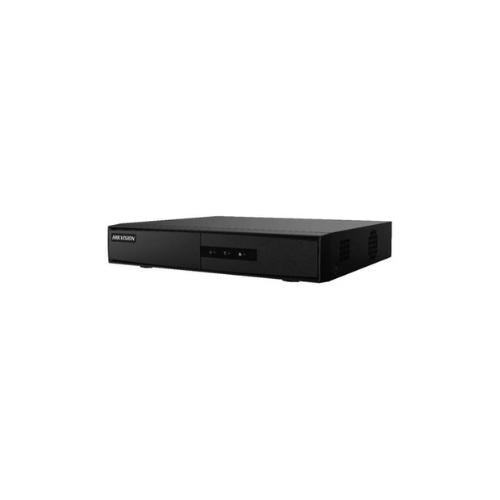

La versión 2.2.3 del software SADP facilita la gestión de dispositivos en red al detectar automáticamente los equipos de la marca EPCOM/HIKVISION en la misma red local. Permite ver información detallada, activar dispositivos, modificar configuraciones de red y recuperar contraseñas. Es esencial ejecutarlo en una PC dentro de la misma red que el dispositivo objetivo para su funcionamiento.
La versión 3.0.4 de Sadp Tool permite localizar dispositivos Hikvision en la red local, como cámaras IP, grabadores NVR, videoporteros, etc. Proporciona detalles como el estado del dispositivo, su IP actual, permite ajustes de red, activación de DHCP, Hik-connect, y restablecimiento de contraseñas de administrador.
La herramienta Sadp Tool para MAC es muy útil para la activación y resolución de problemas en dispositivos de red Hikvision. Detecta automáticamente estos dispositivos en la red local y simplifica su activación y ajustes básicos de configuración de red. Además, ofrece cuatro métodos para restablecer contraseñas olvidadas, incluyendo nuevos métodos como el modo GUID y el modo de pregunta de seguridad.
La nueva versión de iVMS-4200 Lite presenta un interfaz multilingüe, incluido el español, similar al de la versión completa para facilitar la transición a los usuarios habituales. Ofrece tres pestañas para visualización, reproducción y descarga, junto con gestión de dispositivos y configuración para una experiencia fácil e intuitiva. Puede instalarse y ejecutarse simultáneamente con iVMS-4200, permitiendo a los usuarios tener ambas versiones en un mismo ordenador, útil para visualizar cámaras de diferentes cuentas de Hik-Connect.
iVMS-4200 3.8 de Hikvision es un software de gestión de video para dispositivos como NVRs, DVRs y cámaras IP. Ideal para vigilancia de pequeña y mediana escala, ofrece funciones como monitoreo en tiempo real, grabación, búsqueda de video y TV wall. Requisitos: Intel i5 de 6ta generación o superior, 16 GB de RAM, tarjeta de video de 2 GB o más, DirecX 11.0 o superior, y 500 MB de espacio en disco. Características incluyen grabación local, servidor de transmisión de medios, interfaz de mapas, control PTZ con el mouse, audio bidireccional y soporte para Hik-Connect. Puede administrar hasta 1024 dispositivos/cámaras y 256 DVRs/NVRs, con soporte para 4 monitores y actualizaciones gratuitas.
iVMS-4200 2.0.0.12 para Mac es un software de cliente versátil para sistemas Hikvision, que abarca funciones como videovigilancia, videoportero, control de acceso, reconocimiento de matrículas y conteo de personas. Permite la conexión a dispositivos Hikvision en línea para funciones como visualización en vivo, monitoreo de alarmas, grabación y reproducción de video, respaldo de archivos, transmisión de audio, control de salida de alarma y configuración del dispositivo.
VSPlayer de 64 BITS: VSPlayer es un reproductor de transmisión de video para productos Hikvision que permite a los usuarios reproducir y editar archivos de video grabados y visualización en vivo del Protocolo de transmisión en tiempo real (RTSP).
WebComponents para internet explorer. WebComponents es un plug-in que se ejecuta en Internet Explorer para implementar funciones relacionadas con el video, como la vista en vivo y la reproducción.
LocalServiceComponents es un plug-in que se ejecuta en un navegador web (excepto Internet Explorer) para implementar funciones relacionadas con el video, como la vista en vivo y la reproducción.
Batch Config Tool es la herramienta de Hikvision para configurar en masa dispositivos Hikvision. Se puede usar para activar equipos, copiar configuración entre dispositivos, actualizarlos, editar los parámetros de red, tirarlos a fábrica, etc. Batch Config Tool – v3.0.2.6 – EXE.
El software de Copia de Seguridad Remota (Remote Backup software) se utiliza para hacer una copia de seguridad de los archivos de video almacenados en el dispositivo y guardar los archivos de video en el disco local. Los dispositivos compatibles incluyen grabadoras de video digitales híbridas, servidores de video digital, NVR, etc.
Local Playback es la herramienta de reproducción de videos de Hikvision para ver grabaciones desde disco duro o tarjeta de memoria. Sirve para reproducir las grabaciones del disco duro o tarjeta de memoria de un dispositivo Hikvision conectando este disco duro o memoria a un ordenador. Local Playback – v3.0.0.5 EXE.
Administrador de herramientas Hikvision: El Administrador de Herramientas (Tools Manager) integra múltiples herramientas de Hikvision y proporciona acceso a ellas.

DVR Menu Simulator HikGUI 3.2.0_en Setup sin tener un equipo DVRr funcionando, podremos emular el control de uno a través de este emulador de software con las configuraciones y alcances posibles. Interesante para princiantes, para descargarlo Visita este link! También disponemos de la versión online para no tener que instalar en una computadora.